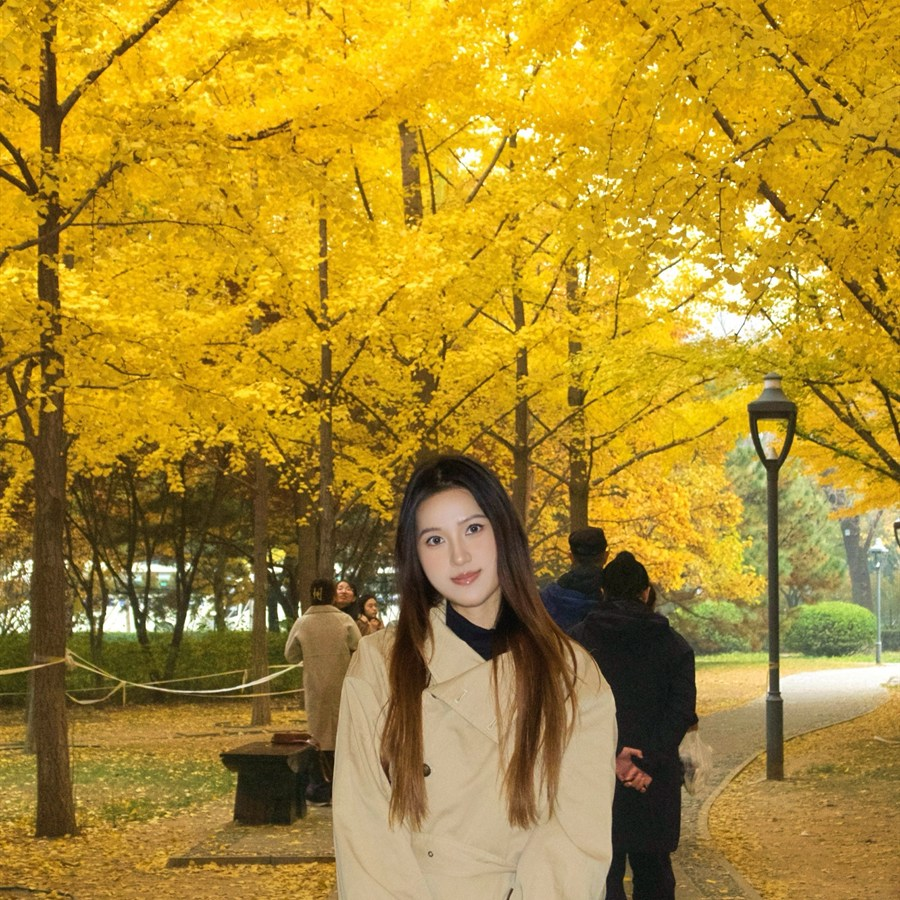

Photography
I love capturing beautiful moments — golden autumn light, trips with friends, everyday smiles — and keeping those memories in photos I can revisit anytime.
Digital education student & STEAM learner
Hi! My name is Wanlin Zheng and I come from Sanya City. My major is digital education, and I'm currently studying in the STEAM class.
I really want to improve my comprehensive abilities and my innovative thinking — that's the reason why I chose this class! I'm excited to learn, create, and grow together with everyone here.

Music, travel, and photography keep me curious, creative, and recharged.
I love capturing beautiful moments — golden autumn light, trips with friends, everyday smiles — and keeping those memories in photos I can revisit anytime.
Music is playing for almost everything I do — dancing, studying, or just relaxing. A good melody instantly lifts my mood and makes the day brighter.
I love exploring new places — from the sunny beaches of my hometown Sanya to cities I haven't visited yet. Every trip brings new sights, flavors, and stories.
No personal homepage is complete without the soft, silly creatures that make every day better.
Peek at my background, browse the things I've built, or just drop me a friendly line.